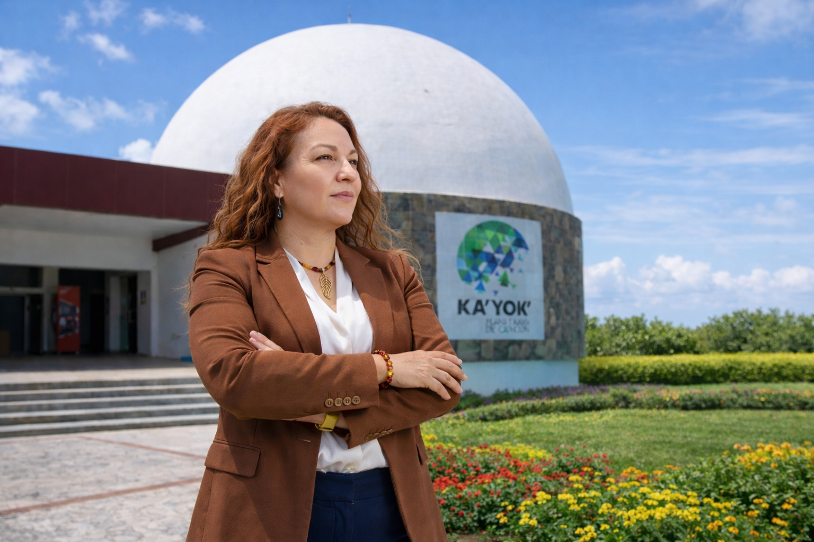
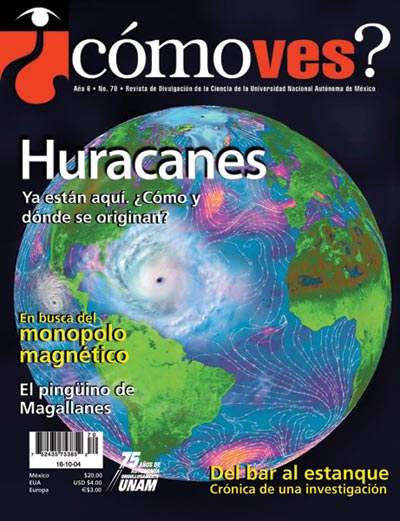
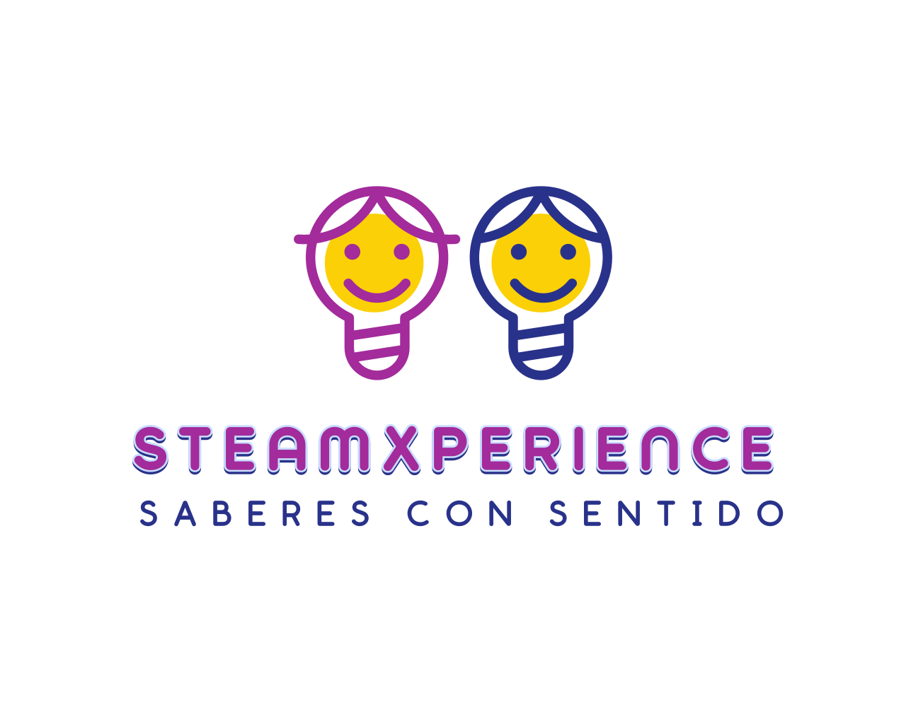
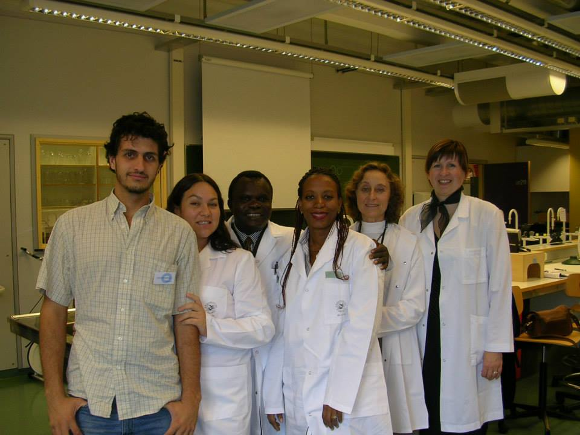

Vision25 anos de liderazgo en la interseccion entre Ciencia, Equidad y Sostenibilidad.
Mas de 25 anos tendiendo puentes entre el rigor academico y la apropiacion social del conocimiento. Biologa de la UNAM, especialista en igualdad de genero, gestora de proyectos de ciencia de alto impacto, fundadora de STEAMXperience y doctorante en Ecologia y Gestion Ambiental.

Más de 25 años transformando la ciencia en una herramienta de poder ciudadano. Mi visión integra el rigor académico con la justicia social y la sostenibilidad como elementos fundamentales para hacer frente a los retos del siglo XXI a través de un diálogo de saberes honesto y significativo.
"Como el caos puede potenciar una vocacion" — TEDx Talk
Charla TEDxCancun sobre convertir el caos en motor de vocacion cientifica.

Comunicacion Publica de la CienciaCon 25 años en referentes como Reforma y la AMC, mi interés es desarrollar narrativas críticas que permitan democratizar temas complejos como la bioseguridad. Mi enfoque busca equilibrar la vigilancia ética con una innovación responsable. Transformo la ciencia en una herramienta ciudadana estratégica para la toma de decisiones con sentido.
Narrativa Critica: Periodismo de ciencia como Herramienta Ciudadana
Gestion de Resultados: Liderazgo en el Ecosistema Nacional de CTI
- CONACYT: Generacion de politicas e iniciativas de divulgacion de la ciencia
- Eficiencia Administrativa: Incremento en afluencia y 600% en ingresos, Planetario Ka' Yok'
- Redes de Conocimiento: Presidencia de la Asociacion Mexicana de Planetarios, A. C.
- Liderazgo en la Red Mexicana de Periodistas de Ciencia (RedMPC)
Igualdad Sustantiva en las Ciencias y Tecnologias
- Liderazgo Internacional: Direccion del EDI Committee en la IPS
- Certificacion Institucional: Liderazgo en el Modelo de Equidad de Genero de Inmujeres
- Empoderamiento: Programa "Ellas en la ciencia" y mentoria #NinasSTEM
Recursos gestionados para la operacion nacional de comunicacion en CONACYT
Aumento en la rentabilidad de espacios de apropiacion social del conocimiento
Convocatorias: Liderazgo en la asignacion de >$200 MDP mediante convocatorias nacionales
Personas beneficiadas en programas de inclusion y formacion cientifica
Disenando el Futuro: Iniciativas STEAM y Educacion Ambiental


Colaboracion InternacionalKarla Peregrina con colegas internacionales en laboratorio de Tromso, Noruega.
Laboratorio de Estrategia Educativa
Analisis sobre educacion y tecnologia en tiempos de la IA.